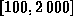
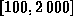

Data Structures and Algorithms
with Object-Oriented Design Patterns in C++
Data Structures and Algorithms
with Object-Oriented Design Patterns in C++One of the problems with building storage pool implementations is that it is very difficult to predict how they will behave when subjected to the sequence of Acquire and Release operations generated by a particular application. Furthermore, an implementation that performs well when subjected to the access pattern of one application may perform very poorly when subjected to the access pattern of another. When things become too difficult to analyze, people often turn to simulation for the answer. In this section, we show how to test a storage pool implementation under a simulated load.
A simulated load is a sequence of Acquire and Release operations that is generated by a program whose behavior is supposed to mimic the behavior of a real application. A typical application periodically calls the Acquire function to allocate some memory for its use. The application holds on to this memory for some amount of time and then it calls Release to return the memory to the storage pool.
We shall mimic this behavior with a time-stepped simulation. A time stepped simulation is a program which has the following form:
for (time t = 0; t < timeLimit; ++t)At each point in time, the application performs the following steps:Simulate the behavior of the application at time t.
 ).
The elements of the priority queue record the address of the area
to be freed and are keyed using the time at which the area is to be freed.
).
The elements of the priority queue record the address of the area
to be freed and are keyed using the time at which the area is to be freed.
The values  and
and  in step 2 are randomly generated.
The random distributions are chosen
to mimic the system behavior that we expect.
in step 2 are randomly generated.
The random distributions are chosen
to mimic the system behavior that we expect.
For example, we may specify that the size  (in bytes)
is uniformly distributed in the interval 
and that the time
(in bytes)
is uniformly distributed in the interval 
and that the time  is uniformly distributed in the interval [1,100].
I.e., at each time step, the application allocates
between 100 and bytes of storage
which it releases after between 1 and 100 time steps.
is uniformly distributed in the interval [1,100].
I.e., at each time step, the application allocates
between 100 and bytes of storage
which it releases after between 1 and 100 time steps.
 Copyright © 1997 by Bruno R. Preiss, P.Eng. All rights reserved.
Copyright © 1997 by Bruno R. Preiss, P.Eng. All rights reserved.